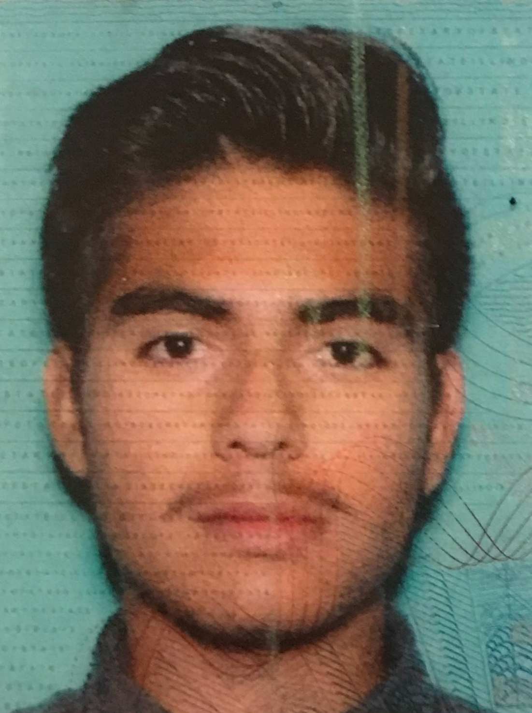

Chicago, IL | email: Pespinoza@hawk.iit.edu
Im a first generation student, majoring in ITM software development. My time with The Aspen Institute Fellowship taught me how to be a leader and how to work effectively with my team. I'm well versed in using team tools like Slack, Google Calendar, and Zoom
The Aspen Institute- Think Tank based of DC || Addressed what change can be done to the community with the Aspen community impact project. Discussed ideas that define what it is to be a leader. Learned valuable skills on how to work well with others.